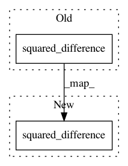

08ea995b1fa9922e9f69c7ecac8cbb1d5055d22e,Models/ItemRanking/CML.py,CML,build_network,#CML#,38
Before Change
neg_item_embedding = tf.nn.embedding_lookup(Q, self.neg_item_id)
self.pred_distance = tf.reduce_sum(tf.squared_difference(user_embedding, item_embedding), 1)
self.pred_distance_neg = tf.reduce_sum(tf.squared_difference(user_embedding, neg_item_embedding), 1)
self.loss = tf.reduce_sum(tf.maximum(self.pred_distance - self.pred_distance_neg + margin, 0))
After Change
neg_item_embedding = tf.nn.embedding_lookup(Q, self.neg_item_id)
self.pred_distance = tf.reduce_sum(tf.nn.dropout(tf.squared_difference(user_embedding, item_embedding),self.keep_rate), 1)
self.pred_distance_neg = tf.reduce_sum(tf.nn.dropout(tf.squared_difference(user_embedding, neg_item_embedding),self.keep_rate), 1)
self.loss = tf.reduce_sum(tf.maximum(self.pred_distance - self.pred_distance_neg + margin, 0))
In pattern: SUPERPATTERN
Frequency: 3
Non-data size: 2
Instances
Project Name: cheungdaven/DeepRec
Commit Name: 08ea995b1fa9922e9f69c7ecac8cbb1d5055d22e
Time: 2018-06-08
Author: cheungdaven@gmail.com
File Name: Models/ItemRanking/CML.py
Class Name: CML
Method Name: build_network
Project Name: astorfi/TensorFlow-World
Commit Name: 23ade1b117a04e86e2058a148ec944fb2e624536
Time: 2017-09-21
Author: mmulholland@ets.org
File Name: codes/2-basics_in_machine_learning/linear_regression/code/linear_regression.py
Class Name:
Method Name: loss
Project Name: cheungdaven/DeepRec
Commit Name: 08ea995b1fa9922e9f69c7ecac8cbb1d5055d22e
Time: 2018-06-08
Author: cheungdaven@gmail.com
File Name: Models/ItemRanking/CML.py
Class Name: CML
Method Name: build_network